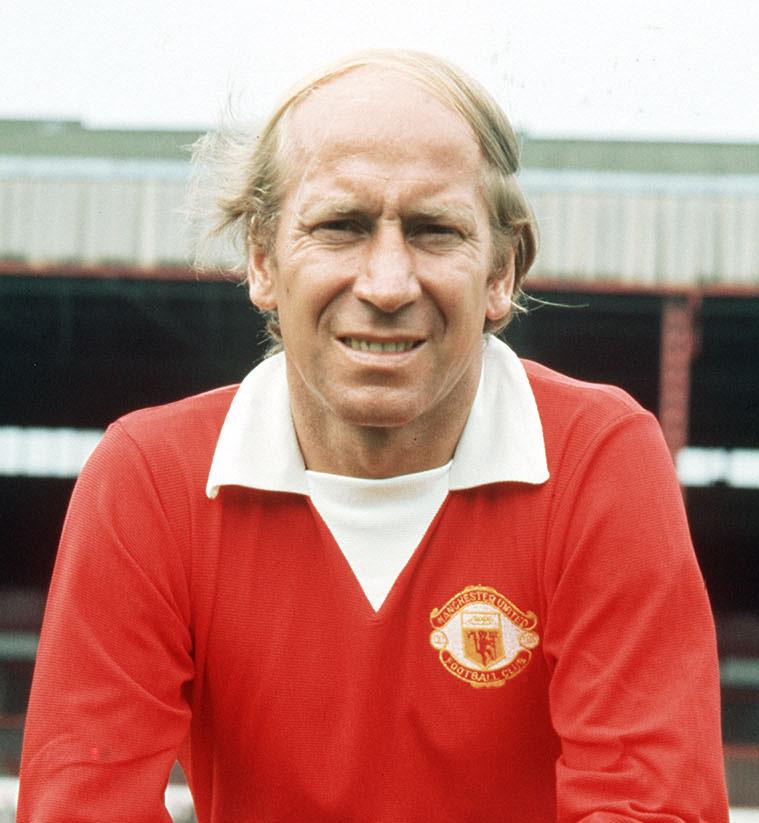

Sir Bobby Charlton – England’s Icon
Sir Bobby Charlton was one of the greatest footballers of all time, known for his incredible skill, sportsmanship, and contributions to the game. He played a pivotal role in England's 1966 World Cup victory and is remembered as a Manchester United legend.
Full Name: Robert Charlton
Date of Birth: October 11, 1937
Place of Birth: Ashington, Northumberland, England
Date of Death: October 21, 2023
Position: Attacking Midfielder / Forward
Clubs: Manchester United, Preston North End, Waterford
National Team: England
Career Highlights
- Played for Manchester United (1956–1973)
- 1966 FIFA World Cup Winner with England
- England’s all-time top scorer for many years (49 goals)
- Ballon d'Or Winner (1966)
- European Cup Winner (1968) with Manchester United
- Made 758 appearances for Manchester United, scoring 249 goals
- Survived the tragic 1958 Munich air disaster and led the club to glory afterward
Playing Style
- Known for powerful long-range shots
- Excellent vision and intelligence on the ball
- Superb passing and leadership skills
- A complete midfielder who could attack and defend
- Played with great grace, humility, and sportsmanship
Quotes
“There has never been a more popular footballer. He was as near perfection as man and player as it is possible to be.” – Sir Alex Ferguson
“He could strike a ball with both feet better than anyone I've ever seen.” – Franz Beckenbauer
Legacy
- Knighted in 1994 for services to football (Sir Bobby Charlton)
- A true gentleman of the game, admired worldwide
- Honoured with a stand named after him at Old Trafford
- One of England's most respected and loved footballers
- Helped rebuild Manchester United after tragedy
- Passed away in 2023, leaving behind a legendary legacy

←Back to Football Index